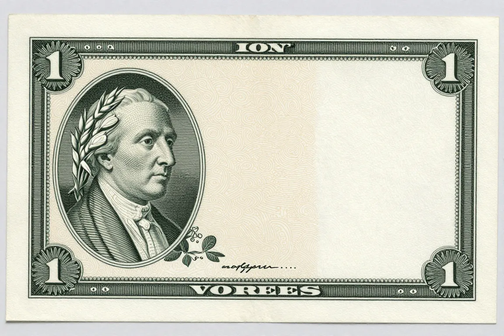

Закалённые стальные пластины несут портреты, виньетки и геометрические розетки и печатаются на трансферном прессе. Густые тонкие линии и машинные узоры трудно скопировать. Оттиск — плотная рамка линейной работы зелёным или чёрным с цветным фоном.

Главная идея
Тонкую гравированную линию и машинные розетки на стали трудно скопировать. Поэтому оттиск служит доказательством подлинности банкноты или марки.
Принципы дизайна
Гравируйте портрет и виньетку тонкими параллельными линиями, 150–200 линий на дюйм.
Режьте кайму розеточной машиной, чтобы линии гильоше переплетались с постоянным шагом.
Печатайте основную пластину глубокой печатью чёрным или зелёным, а за ней — тоновую пластину светлее.
Печатайте серийные номера и печать вторым цветом, высокой печатью.
Обрамляйте картину замкнутой каймой с названием гравированным письмом.
Печатайте с перенесённой стальной пластины, чтобы одну матрицу несли многие пластины.
Антипаттерны
Растр или фотографический портрет
Фактура кисти или мягкая лавировка
Плоские векторные формы
Неоновый или флуоресцентный цвет
Грубая линия, которую способен воспроизвести копир